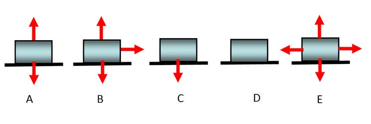

edX
WitsX Introduction to Physics
Concept Problems
Problem 2: Drawing Free-body Diagrams
Now, the same block moves with a constant velocity to the right on the firctionless surface. Which of the following most closely resembles the correct freebody diagram for all the forces acting on the block?
A
B
C
D
E
B
C
D
E
Answer: A
Explanation: There is a force due to gravity pulling the box down, and a normal force pointing up due to the contact between the box and the horizontal surface. Since there is no vertical acceleration, these two forces must cancel. Although the box is moving to the right, it is moving at a constant velocity, meaning that no net force is being applied to the box horizontally. In the absence of friction, there can be no force to the right so long as the box maintains its constant velocity.